Mnist dataset
In this example we will load the mnist dataset and cluster the images.
Load dataset
# Load library
import matplotlib.pyplot as plt
from clustimage import Clustimage
# init
cl = Clustimage()
# Load example digit data
X = cl.import_example(data='mnist')
print(X)
# Each row is an image that can be plotted after reshaping:
plt.imshow(X[0,:].reshape(8,8), cmap='binary')
# array([[ 0., 0., 5., ..., 0., 0., 0.],
# [ 0., 0., 0., ..., 10., 0., 0.],
# [ 0., 0., 0., ..., 16., 9., 0.],
# ...,
# [ 0., 0., 0., ..., 9., 0., 0.],
# [ 0., 0., 0., ..., 4., 0., 0.],
# [ 0., 0., 6., ..., 6., 0., 0.]])
#
Cluster the images
# Preprocessing and feature extraction
results = cl.fit_transform(X)
# Lets examine the results.
print(results.keys())
# ['feat', 'xycoord', 'pathnames', 'filenames', 'labels']
#
# feat : Extracted features
# xycoord : Coordinates of samples in the embedded space.
# filenames : Name of the files
# pathnames : Absolute location of the files
# labels : Cluster labels in the same order as the input
Detect unique images
# Get the unique images
unique_samples = cl.unique()
#
print(unique_samples.keys())
# ['labels', 'idx', 'xycoord_center', 'pathnames']
#
# Collect the unique images from the input
X[unique_samples['idx'],:]
# Plot unique images.
cl.plot_unique()
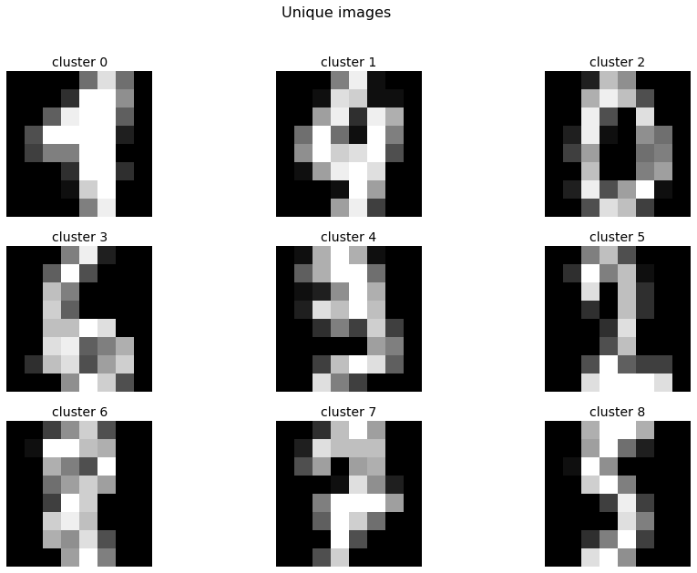 |
Cluster evaluation
# Plot the explained variance
cl.pca.plot()
# Make scatter plot of PC1 vs PC2
cl.pca.scatter(legend=False, label=False)
# Plot the evaluation of the number of clusters
cl.clusteval.plot()
|
|


# Make silhouette plot
cl.clusteval.scatter(cl.results['xycoord'])
|

Scatter plot
The scatterplot that is coloured on the clusterlabels. The clusterlabels should match the unique labels. Cluster 1 contains digit 4, and Cluster 5 contains digit 2, etc.
# Make scatterplot
cl.scatter(zoom=None)
# Plot the image that is in the center of the cluster
cl.scatter(zoom=4)
# Lets change some more arguments to make a pretty scatterplot
cl.scatter(zoom=None, dotsize=200, figsize=(25, 15), args_scatter={'fontsize':24, 'gradient':'#FFFFFF', 'cmap':'Set2', 'legend':True})
|
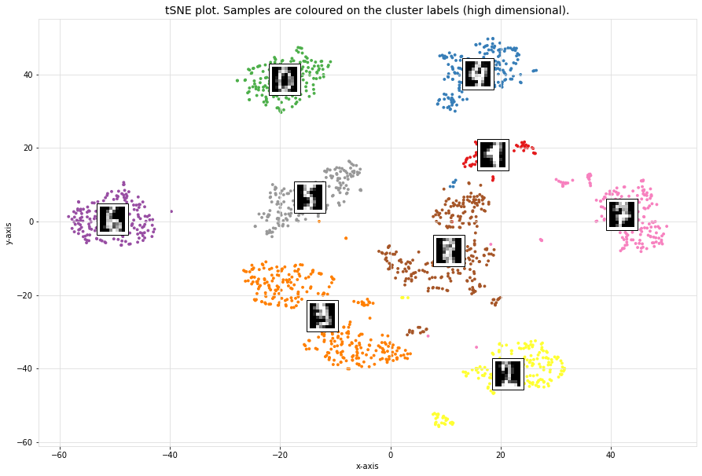 |
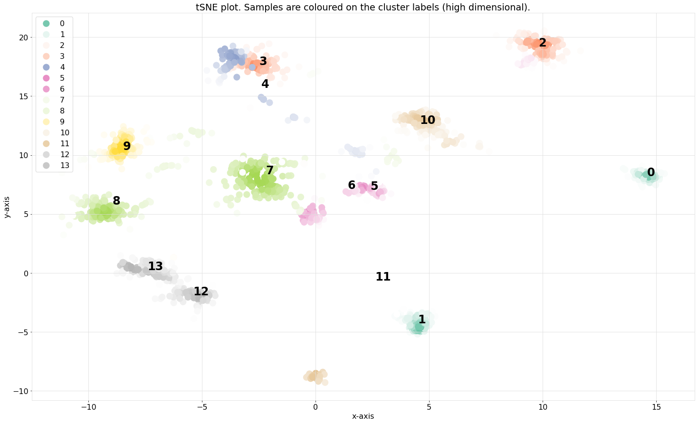 |
|

High resolution images where all mnist samples are shown.
cl.scatter(zoom=8, plt_all=True, figsize=(150,100))
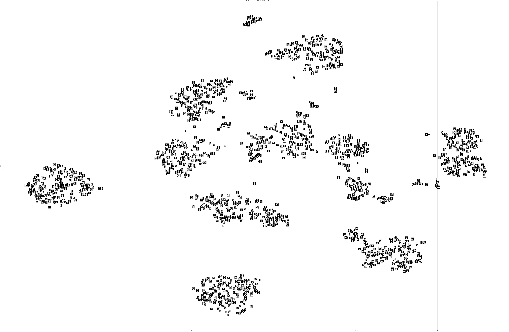 |
Plot images detected in a cluster
# Plot all images per cluster
cl.plot(cmap='binary')
# Plot the images in a specific cluster
cl.plot(cmap='binary', labels=[1,5])
|
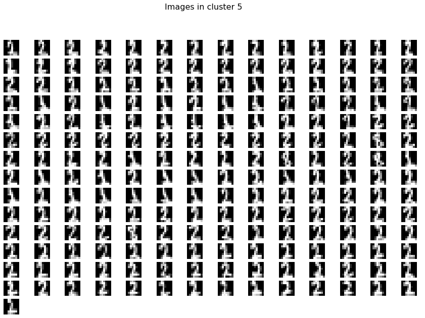 |

Dendrogram
# The dendrogram is based on the high-dimensional feature space.
cl.dendrogram()
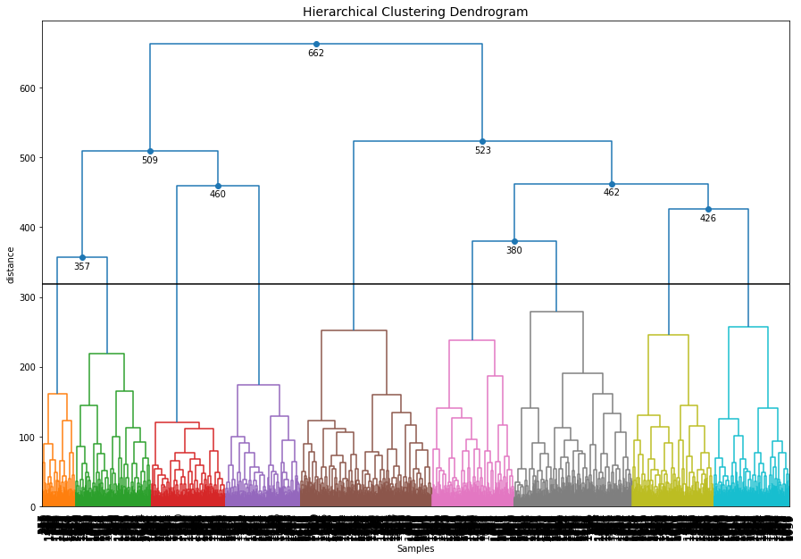 |
Caltech101 dataset
The documentation and docstrings readily contains various examples but lets make another one with many samples. In this example, the Caltech101 dataset will be clustered! The pictures of objects belonging to 101 categories. About 40 to 800 images per category. Most categories have about 50 images. The size of each image is roughly 300 x 200 pixels. Download the dataset over here: http://www.vision.caltech.edu/Image_Datasets/Caltech101/#Download
Cluster the images
from clustimage import Clustimage
# init
cl = Clustimage(method='pca', params_pca={'n_components':250})
# Collect samples
# Preprocessing, feature extraction and cluster evaluation
results = cl.fit_transform('C://101_ObjectCategories//', min_clust=30, max_clust=60)
# Try some other clustering (evaluation) approaches
# cl.cluster(evaluate='silhouette', min_clust=30, max_clust=60)
Cluster evaluation
With clustimage we extracted the features that explained 89% of the variance. The optimal number of clusters of 49 (right figure).
# Evaluate the number of clusters.
cl.clusteval.plot()
cl.clusteval.scatter(cl.results['xycoord'])
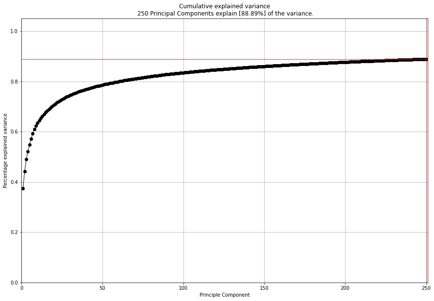 |
|

Silhouette Plot
# Plot one of the clusters
cl.plot(labels=40)
# Plotting
cl.dendrogram()
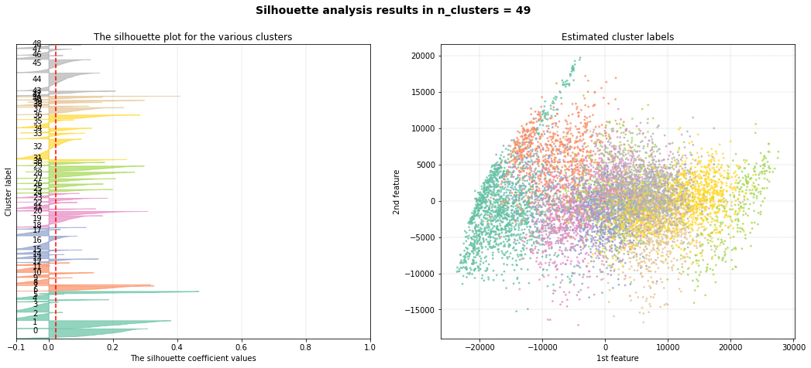 |
Average image per cluster
For each of the detected clusters, we can collect the images and plot the image in the center (left figure), or we can average all images to a single image (right figure).
# Plot unique images.
cl.plot_unique()
cl.plot_unique(img_mean=False)
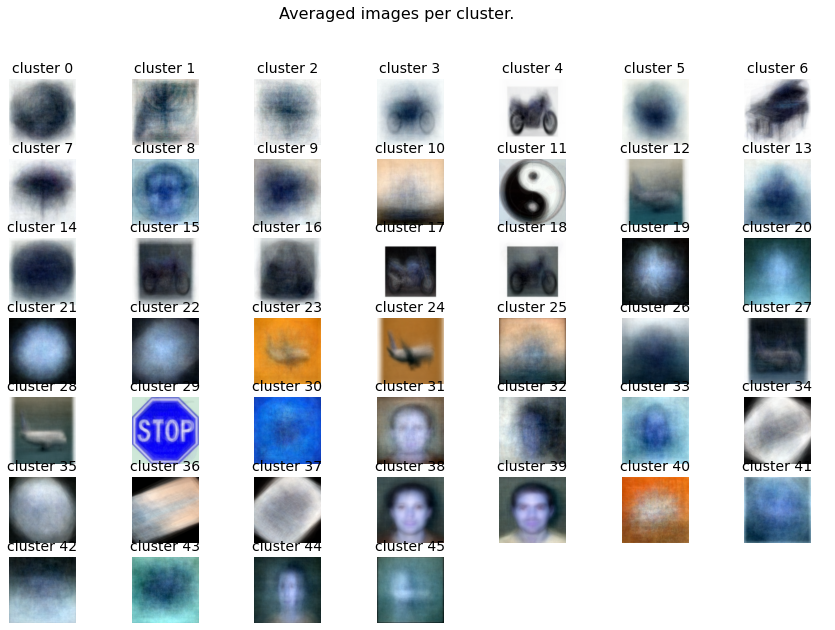 |
Scatter plot
A scatter plot demonstrates the samples with its cluster labels (colors), and the average images per cluster.
# Scatter
cl.scatter(dotsize=10, img_mean=False, zoom=None)
cl.scatter(dotsize=10, img_mean=False)
cl.scatter(dotsize=10)
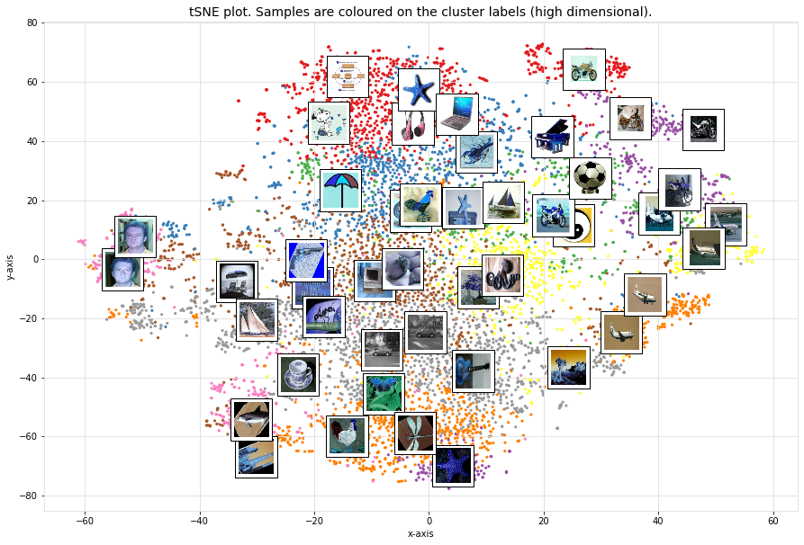 |
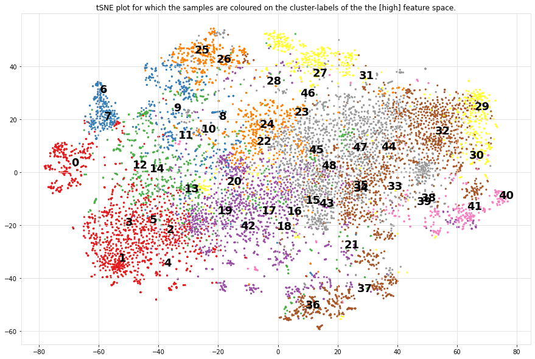 |
Plot images detected in a particular cluster
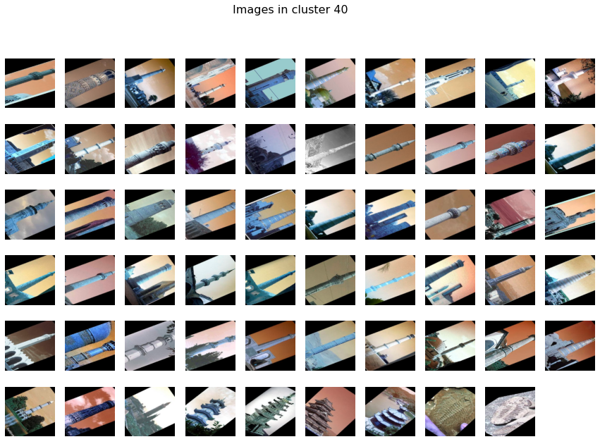 |
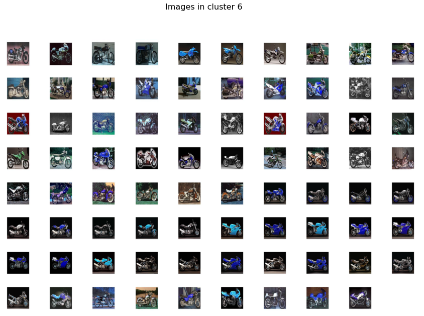 |
Flower dataset
In this example we will load the flower dataset and cluster the images for which the path locations are on disk.
Load dataset
# Load library
from clustimage import Clustimage
# init
cl = Clustimage(method='pca')
# load example with flowers
pathnames = cl.import_example(data='flowers')
# The pathnames are stored in a list
print(pathnames[0:2])
# ['C:\\temp\\flower_images\\0001.png', 'C:\\temp\\flower_images\\0002.png']
Cluster the images
# Preprocessing, feature extraction and clustering.
results = cl.fit_transform(pathnames)
The number of detected clusters looks pretty good because there is a high distinction between the peak for 5 clusters and the number of clusters that subsequently follow.
cl.clusteval.plot()
cl.clusteval.scatter(cl.results['xycoord'])
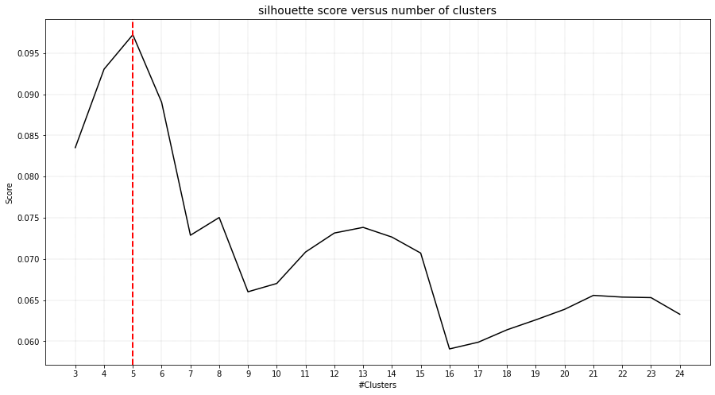 |
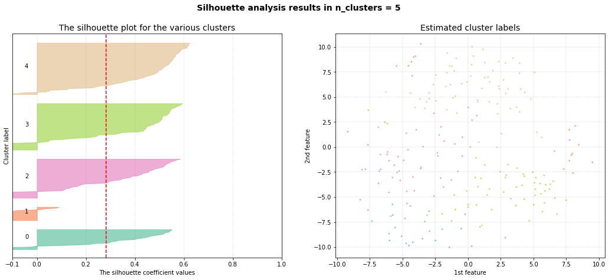 |
Detect unique images
# Plot unique images
cl.plot_unique()
cl.plot_unique(img_mean=False)
# Plot all images per cluster
cl.plot()
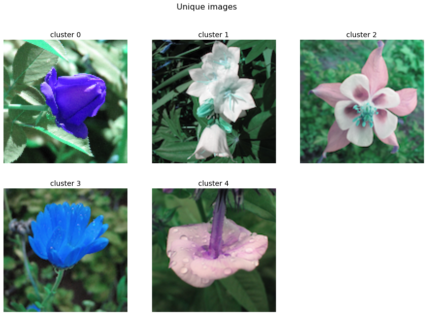 |
|

Scatter plot
A scatter plot demonstrates the samples with its cluster labels (colors), and the average images per cluster.
# Scatter
cl.scatter(dotsize=50, zoom=None)
cl.scatter(dotsize=50, zoom=0.5)
cl.scatter(dotsize=50, zoom=0.5, img_mean=False)
cl.scatter(dotsize=50, zoom=0.5, img_mean=False)
cl.scatter(zoom=1.2, plt_all=True, figsize=(150,100))
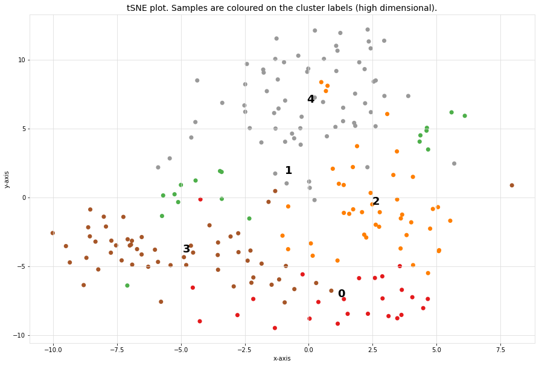 |
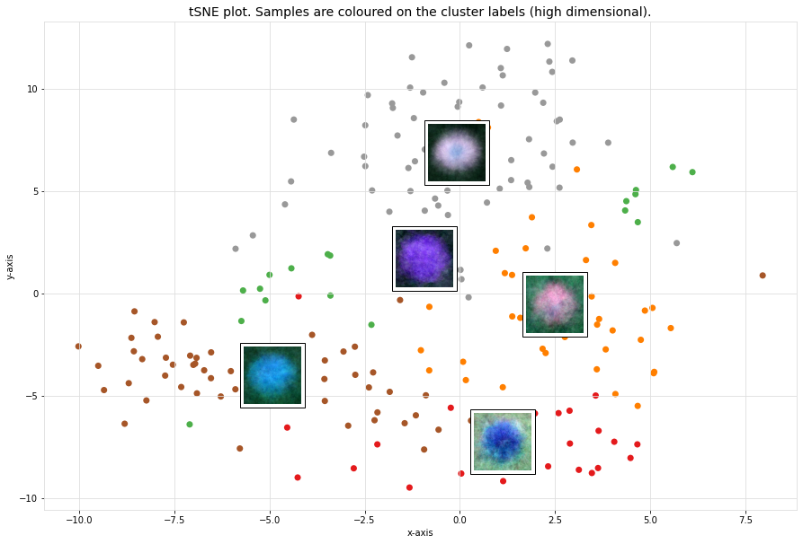 |
|
|


Plot images detected in a particular cluster
# Plot the images in a specific cluster
cl.plot(labels=3)
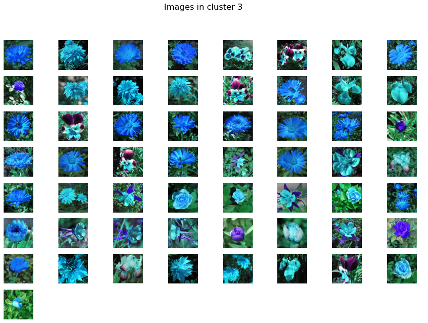 |
|
|


Predict unseen sample
Find images that are significanly similar as the unseen input image.
results_find = cl.find(path_to_imgs[0:2], alpha=0.05)
cl.plot_find()
# Map the unseen images in existing feature-space.
cl.scatter()
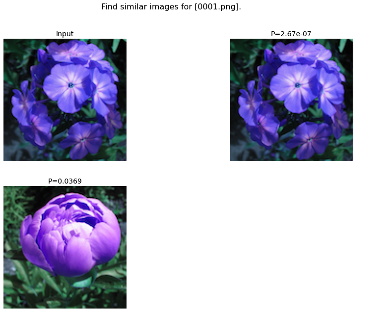 |
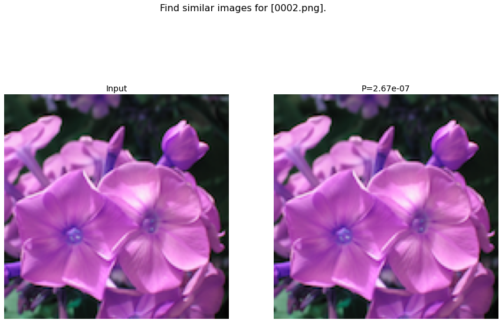 |
|

Clustering of faces
from clustimage import Clustimage
# Initialize with PCA
cl = Clustimage(method='pca', grayscale=True)
# Load example with faces
X = cl.import_example(data='faces')
# Initialize and run
results = cl.fit_transform(X)
# In case you need to extract the faces from the images
# face_results = cl.extract_faces(pathnames)
# The detected faces are extracted and stored in face_resuls. We can now easily provide the pathnames of the faces that are stored in pathnames_face.
# results = cl.fit_transform(face_results['pathnames_face'])
# Plot the evaluation of the number of clusters. As you can see, the maximum number of cluster evaluated is 24 can perhaps be too small.
cl.clusteval.plot()
# Lets increase the maximum number and clusters and run solely the clustering. Note that you do not need to fit_transform() anymore. You can only do the clustering now.
cl.cluster(max_clust=35)
# And plot again. As you can see, it keeps increasing which means that it may not found any local maximum anymore.
# When looking at the graph, we see a local maximum at 12 clusters. Lets go for that
cl.cluster(min_clust=4, max_clust=20)
# Lets plot the 12 unique clusters that contain the faces
cl.plot_unique()
# Scatter
cl.scatter(zoom=None)
cl.scatter(zoom=0.2)
# Make plot
cl.plot(show_hog=True, labels=[1,7])
# Plot faces
cl.plot_faces()
# Dendrogram depicts the clustering of the faces
cl.dendrogram()
|
|
|
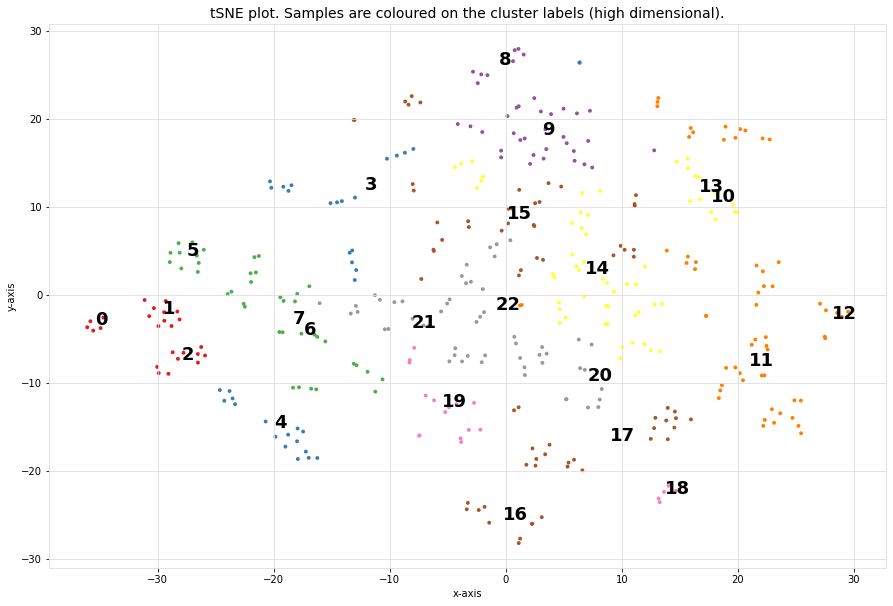 |
|
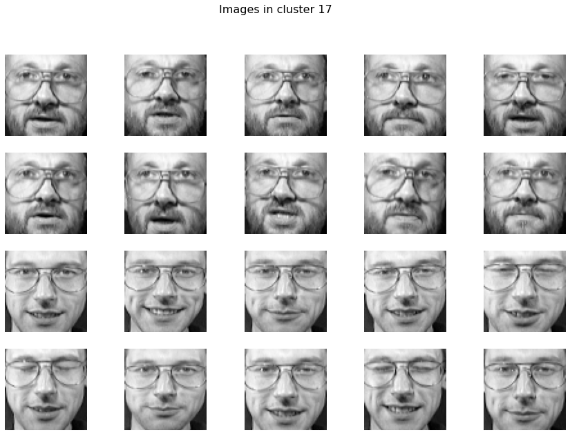 |
|
|


Extract images belonging to clusters
# Import library
from clustimage import Clustimage
# Initialize
cl = Clustimage(method='pca')
# Import data
pathnames = cl.import_example(data='flowers')
# Cluster flowers
results = cl.fit_transform(pathnames)
# All results are stored in a dict:
print(cl.results.keys())
# Which is the same as:
print(results.keys())
dict_keys(['img', 'feat', 'xycoord', 'pathnames', 'labels', 'filenames'])
# Extracting images that belong to cluster label=0:
Iloc = cl.results['labels']==0
cl.results['pathnames'][Iloc]
# Extracting xy-coordinates for the scatterplot for cluster 0:
import matplotlib.pyplot as plt
xycoord = cl.results['xycoord'][Iloc]
plt.scatter(xycoord[:,0], xycoord[:,1])
# Plot the images for cluster 0:
# Images in cluster 0
imgs = np.where(cl.results['img'][Iloc])[0]
# Make sure you get the right dimension
dim = cl.get_dim(cl.results['img'][Iloc][0,:])
# Plot
for img in imgs:
plt.figure()
plt.imshow(img.reshape(dim))
plt.title()
Set image filenames using pandas dataframes
In case a datamatrix is provided as an input to the model, the default setting is that random filenames are generated and stored in the tempdirectory. However, with a pandas dataframe as input you can provide the desired filenames by changing the index names!
from clustimage import Clustimage
import pandas as pd
import numpy as np
# Initialize
cl = Clustimage()
# Import data
Xraw = cl.import_example(data='mnist')
# The Xraw datamatrix is numpy array for which the rows are the different images.
print(Xraw)
# array([[ 0., 0., 5., ..., 0., 0., 0.],
# [ 0., 0., 0., ..., 10., 0., 0.],
# [ 0., 0., 0., ..., 16., 9., 0.],
# ...,
# [ 0., 0., 1., ..., 6., 0., 0.],
# [ 0., 0., 2., ..., 12., 0., 0.],
# [ 0., 0., 10., ..., 12., 1., 0.]])
# Create some filenames
filenames = list(map(lambda x: str(x) + '.png', np.arange(0, Xraw.shape[0])))
# Store in a pandas dataframe
Xraw = pd.DataFrame(Xraw, index=filenames)
print(Xraw)
# 0 1 2 3 4 5 ... 58 59 60 61 62 63
# 0.png 0.0 0.0 5.0 13.0 9.0 1.0 ... 6.0 13.0 10.0 0.0 0.0 0.0
# 1.png 0.0 0.0 0.0 12.0 13.0 5.0 ... 0.0 11.0 16.0 10.0 0.0 0.0
# 2.png 0.0 0.0 0.0 4.0 15.0 12.0 ... 0.0 3.0 11.0 16.0 9.0 0.0
# 3.png 0.0 0.0 7.0 15.0 13.0 1.0 ... 7.0 13.0 13.0 9.0 0.0 0.0
# 4.png 0.0 0.0 0.0 1.0 11.0 0.0 ... 0.0 2.0 16.0 4.0 0.0 0.0
# ... ... ... ... ... ... ... ... ... ... ... ... ...
# 1792.png 0.0 0.0 4.0 10.0 13.0 6.0 ... 2.0 14.0 15.0 9.0 0.0 0.0
# 1793.png 0.0 0.0 6.0 16.0 13.0 11.0 ... 6.0 16.0 14.0 6.0 0.0 0.0
# 1794.png 0.0 0.0 1.0 11.0 15.0 1.0 ... 2.0 9.0 13.0 6.0 0.0 0.0
# 1795.png 0.0 0.0 2.0 10.0 7.0 0.0 ... 5.0 12.0 16.0 12.0 0.0 0.0
# 1796.png 0.0 0.0 10.0 14.0 8.0 1.0 ... 8.0 12.0 14.0 12.0 1.0 0.0
# Fit and transform the data
results = cl.fit_transform(Xraw)
# The index filenames are now used to store the images on disk.
print(results['filenames'])
# array(['0.png', '1.png', '2.png', ..., '1794.png', '1795.png', '1796.png'],
Import images from url location
Images can also be imported from url locations. Each image is first downloaded and stored on a (specified) temp directory. In this example we will download 5 images from url locations. Note that url images and path locations can be combined.
from clustimage import Clustimage
# Initialize
cl = Clustimage(method='pca', embedding='umap')
# Importing the files files from disk, cleaning and pre-processing
url_to_images = ['https://erdogant.github.io/datasets/images/flower_images/flower_orange.png',
'https://erdogant.github.io/datasets/images/flower_images/flower_white_1.png',
'https://erdogant.github.io/datasets/images/flower_images/flower_white_2.png',
'https://erdogant.github.io/datasets/images/flower_images/flower_yellow_1.png',
'https://erdogant.github.io/datasets/images/flower_images/flower_yellow_2.png']
# Import into model
X = cl.import_data(url_to_images)
# Extract features using method
Xfeat = cl.extract_feat(X)
# Embedding
xycoord = cl.embedding(Xfeat)
# Cluster
labels = cl.cluster()
# Return
results = cl.results
# Make plots
cl.plot()
cl.dendrogram()
Breaking up the steps
Instead of using the all-in-one functionality: fit_transform(), it is also possible to break-up the steps.
from clustimage import Clustimage
# Initialize
cl = Clustimage(method='pca')
# Import data
Xraw = cl.import_example(data='flowers')
Xraw = cl.import_example(data='mnist')
Xraw = cl.import_example(data='faces')
# Check whether in is dir, list of files or array-like
X = cl.import_data(Xraw)
# Extract features using method
Xfeat = cl.extract_feat(X)
# Embedding using tSNE
xycoord = cl.embedding(Xfeat)
# Cluster
labels = cl.cluster()
# Return
results = cl.results
# Or all in one run
# results = cl.fit_transform(X)
# Plots
cl.clusteval.plot()
cl.scatter()
cl.plot_unique()
cl.plot()
cl.dendrogram()
# Find
results_find = cl.find(Xraw[0], k=0, alpha=0.05)
cl.plot_find()